Шаг 1: подготавливаем лук.
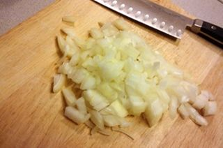
С помощью ножа очищаем лук от шелухи и после тщательно промываем под проточной водой. Выкладываем овощ на разделочную доску и мелко рубим на кубики. Измельченный компонент перекладываем в свободную тарелку.
Шаг 2: подготавливаем чеснок.
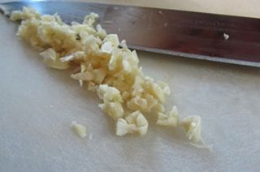
Воспользовавшись ножом, очищаем чеснок от шелухи и после слегка промываем под проточной водой. 2 зубчика выкладываем на разделочную доску и ножом рубим на небольшие кусочки. Измельченный компонент перекладываем в чистое блюдце.
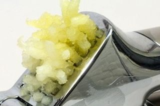
Оставшиеся зубчики измельчаем через чеснокодавилку в другое блюдце и пока что откладываем в сторону.
Шаг 3: готовим мидии.
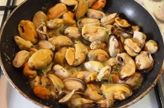
В сковороду наливаем небольшое количество оливкового масла и ставим емкость на средний огонь. Когда масло хорошо разогреется, выкладываем в сковороду мелко рубленый чеснок и лук. Время от времени помешивая ингредиенты деревянной лопаткой, обжариваем до прозрачности. После этого добавляем в емкость свежие мидии и выливаем вино. Делаем большой огонь, время от времени все помешиваем лопаткой и тушим все в течение 5-8 минут. По истечении отведенного времени солим и перчим смесь по вкусу. После этого выключаем конфорку, а мидии с жареными овощами перекладываем в глубокую тарелку так, чтобы жидкость после жарки осталась в сковороде.
Шаг 4: подготавливаем базилик.
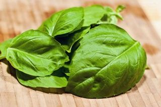
Листья базилика промываем под проточной водой и выкладываем на разделочную доску. Воспользовавшись ножом, мелко рубим зелень и перекладываем в чистую тарелку.
Шаг 5: подготавливаем лайм или лимон.
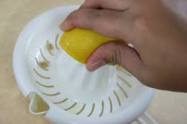
С помощью соковыжималки выдавливаем сок из цитруса. Внимание: именно свежевыжатый сок лайма или лимона придаст блюду пикантный холодок с кислинкой.
Шаг 6: готовим заправку для блюда.
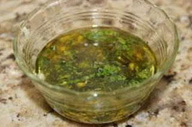
В среднюю миску выливаем 4 столовые ложки оливкового масла, а также добавляем чеснок, выдавленный с помощью чесночницы, мелко рубленые листья базилика и свежевыжатый цитрусовый сок. С помощью столовой ложки все хорошо перемешиваем и отставляем в сторону настояться.
Шаг 7: подготавливаем помидоры.
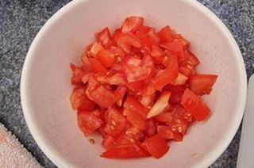
Помидоры промываем под проточной водой и выкладываем на разделочную доску. Воспользовавшись ножом, измельчаем компонент на небольшие кусочки и перекладываем в чистую тарелку. Внимание: по желанию овощ можно нарезать дольками или четвертинками.
Шаг 8: подготавливаем болгарский перец.
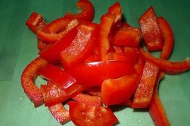
Болгарский перец промываем под проточной водой и выкладываем на разделочную доску. Ножом удаляем хвостик и очищаем овощ от семян. После этого измельчаем компонент на небольшие кусочки произвольной формы.
Шаг 9: подготавливаем зелень.
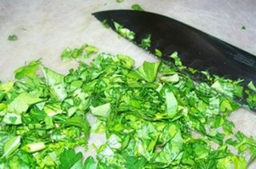
Промываем под проточной водой петрушку и кинзу, после – на весу отряхиваем от лишней жидкости и выкладываем на разделочную доску. С помощью ножа мелко рубим компоненты и перекладываем в чистую тарелку.
Шаг 10: подготавливаем листья салата.
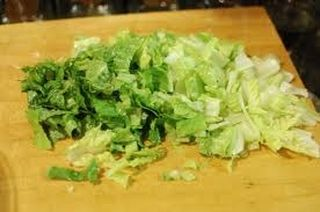
Салатные листья для начала необходимо тщательно промыть под проточной водой, так как зачастую в них бывает песок и другая грязь. После этого на весу отряхиваем их от лишней жидкости и перекладываем на разделочную доску. Воспользовавшись ножом, мелко рубим зелень и перекладываем в чистую тарелку.
Шаг 11: готовим салат с мидиями.
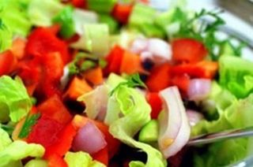
В глубокую миску выкладываем такие ингредиенты, как мелко рубленые салатные листья, помидоры, болгарский перец и зелень. Заливаем все заправкой, по желанию солим и перчим, и аккуратно перемешиваем деревянной лопаткой или столовой ложкой.
После этого перекладываем овощной салат на плоское блюдо для подачи, сверху выкладываем мидии, сбрызгиваем малиновым уксусом и можем подавать к обеденному столу.